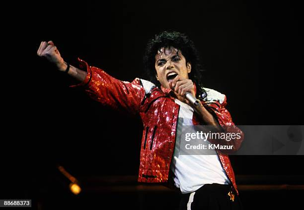

By Adam Behr | August 14, 2021
MTV's first broadcast on August 1, 1981 opened with footage of a shuttle launch and the words "ladies and gentleman, rock and roll". The first song, however, was The Buggles' distinctly poppy single –appropriately enough, "Video Killed the Radio Star."
Given the commercial and cultural behemoth it would become, MTV's launch was inauspicious. It was set up with a view to capitalizing on the burgeoning market in cable TV, but parent company Warner Amex was skeptical. The initial broadcasts were to the New Jersey area only, and founding executives recall an uphill battle for approval and resources. Robert Pittman, MTV's first CEO, notes that Warner Amex initially said no to the idea.
Such skepticism wasn't entirely unfounded. Although tailor-made promotional clips for pop and rock songs had a history dating back at least as far as the 1960s, and the first "music video" – for Queen's "Bohemian Rhapsody" – was in 1975, the format was still relatively marginal. As MTV studio producer Robert Morton put it:
"We'd explain that we were starting a music channel and we're gonna play videos, and people didn't even know what videos were."
MTV debuted their first broadcast on August 1, 1981, marking the beginning of their touch on the entertainment world. Courtesy of YouTube
In the intervening 40 years, MTV might not have "killed" the radio star, and its brand salience may be somewhat diluted in the age of YouTube, TikTok and other social media platforms. But from such comparatively meager beginnings – in corporate terms, anyway – it's difficult to overstate its effect on popular culture at large.
MTV's effect on record sales was quickly noted. During the channel's initial rise and 1980s heyday, it helped to kick-start the careers of stars such as Cyndi Lauper, and launched others – like Madonna and Michael Jackson – into the stratosphere.
Its early days, however, were also dogged with accusations of a "color barrier" that favored white artists. This echoed what happened in US radio throughout the '50s and '60s, when a segregated system was in place, and some stations are now widely known to have refused to play Black artists. Versions of their songs were often remade, carving out space for white artists they had influenced, such as Elvis Presley.
Indeed, part of the significance of artists like Prince and Michael Jackson lies in the way that they pushed through to mainstream white audiences, using MTV as a significant platform, especially as it expanded beyond its initial primarily rock-oriented base.
Heavy rotation on MTV supercharged the benefits of video as marketing tool, and the widespread success of videos like Michael Jackson's "Thriller" and "Billie Jean" – alongside spiraling budgets – reinforced the visual as a key component of mainstream pop.
Michael Jackson used MTV to pave his way as a young, black artist in the U.S. Courtesy of Getty Images
This aesthetic convergence of sound and sight was felt beyond music. Cable TV precipitated the decline of the traditional television networks. The networks still had major moments like the "Who Shot JR?" reveal in "Dallas" in 1980 (83 million viewersin the US), or the final episode of "M*A*S*H*" in 1983 (106 million viewers, still a record), but their dominance was fading.
The televisual monoculture of the post-war era gave way to more diverse content. MTV, through alignment with the music charts, helped to fill a popular cultural gap, especially since it greatly accelerated the trend for cross-marketing of musical acts and songs with major Hollywood productions.
Music videos and the movies were natural partners in selling content like theme songs, soundtracks and music-oriented blockbusters. From "Ghostbusters" and "Flashdance" to "Top Gun" and "Beverley Hills Cop," a hit single became an integral part of Hollywood's promotional strategy. The aesthetic cross-over worked both ways, too. The pathway from directing music videos to films became well-trodden by names whose early work found a home on MTV (like David Fincher, Michel Gondry and Spike Jonze).
MTV also predicted and encouraged the globalization of media content and formats. It spawned a host of sister channels in the US and internationally, like MTV Europe and MTV Brasil.
Beyond the music videos themselves, its adoption of grunge and, latterly, rap in the 1990s also had an effect on the rise of genres, as well as individual artists. Later the MTVs Video Music Awards became an important indicator of success in the industry and a much anticipated yearly event. Concert series like "Unplugged "spawned hit live albums in their own right.
As the media environment became more fragmented, MTV also popularized reality and celebrity TV formats. Precursors to modern reality TV included "The Real World," which depicted strangers living together. Debuting in 1992, eight years before "Big Brother," it still runs today. Other MTV shows like "Jackass," "The Osbournes" and Jersey Shore were breakout successes in the "reality" mold, the latter giving rise to international spin-offs like "Geordie Shore" in the UK.
MTV also had a hand in shaping the contemporary adult cartoon when it commissioned Mike Judge's "Beavis and Butt-Head" in the early '90s. Taking the satirical aspects of more family-oriented shows like The Simpsons and adding a sharper edge, the cartoon pushed the boundaries of taste.
Hit-show "Beavis and Butthead" first aired on MTV in 1991, with this opening video. Courtesy: YouTube
"Beavis and Butt-Head" leaned into the grunge-oriented demographic, giving rise to still iconic spin-off "Daria" and "King of the Hill" (also produced by Judge). "South Park" creators Trey Parker and Matt Stone have attested to the influence of "Beavis and Butt-Head" and its nihilistic Generation X aesthetic, which paved the way for latter-day hits like "Bojack Horseman," "Archer" and "Rick and Morty."
MTV forged new paths in entertainment by serving third-party produced content like music videos to a wide audience, paving the way for platforms like Netflix, pushing forward formats like reality TV, and yoking popular music and movies closer together. Beyond just hosting some of the key pop moments of the last 40 years, it has had a huge effect on shaping the cultural landscape of today.